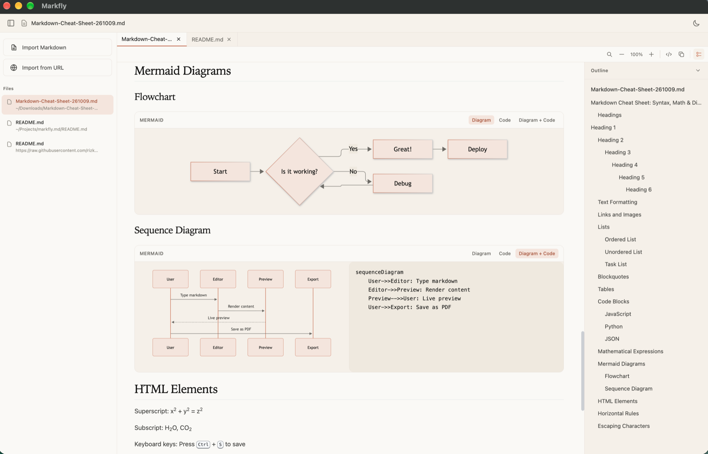

Open from Finder
Your Markdown files open right in Markfly. No import step, no setup.
See how it opensA native Markdown viewer for macOS
Open Markdown files from Finder with rich, live rendering, without loading a heavy code editor.

Made for reading
Open local files from Finder and read them without loading a development workspace.
Your Markdown files open right in Markfly. No import step, no setup.
See how it opensSee Markdown, highlighted code, and Mermaid diagrams rendered clearly.
Search inside a document, then copy rendered content as Markdown.
Mermaid, your way
Switch between a rendered diagram, its source, or a side-by-side view for each file.
From Finder to Markfly
Double-click a file in Finder. Markfly opens it as a clean, readable preview.
No import dialog. No extra steps. Just open your file.
A simpler workflow
Double-click a Markdown file in Finder to open it in Markfly.
Follow the document with code, diagrams, and formatting intact.
Jump to a phrase or copy what you need as Markdown.
A better view is one click away
Built for macOS on Apple silicon.
Download for Mac